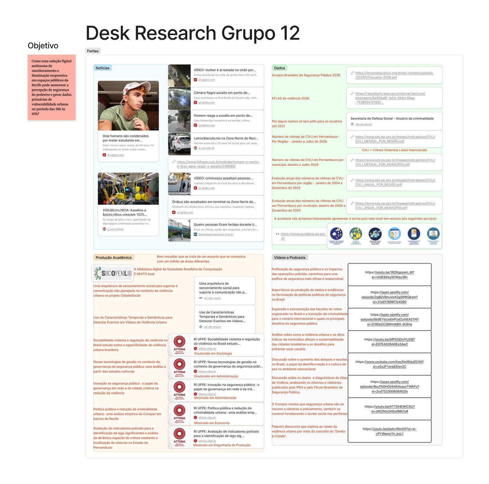
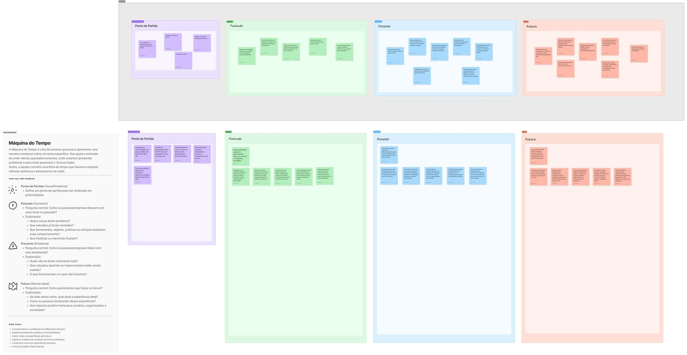
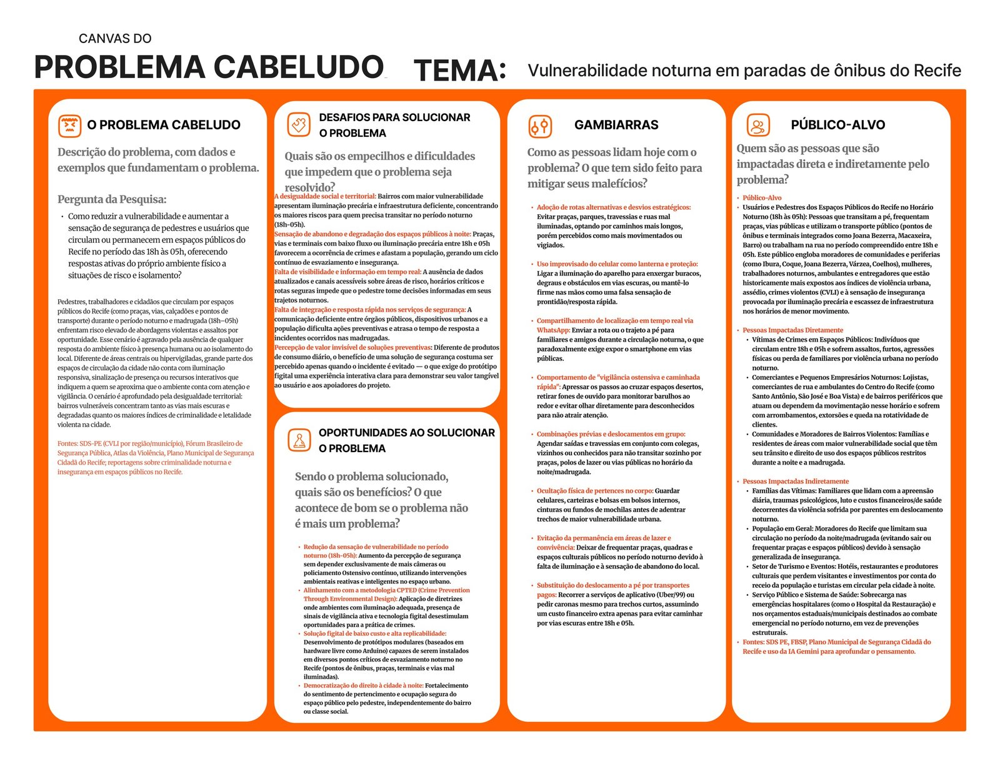
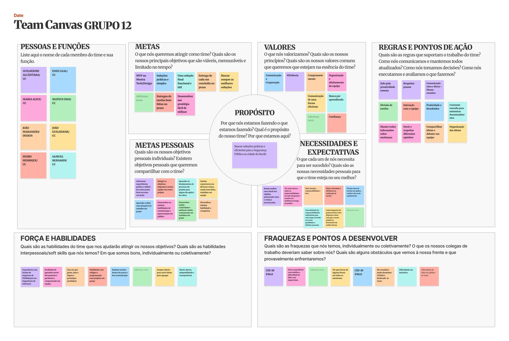
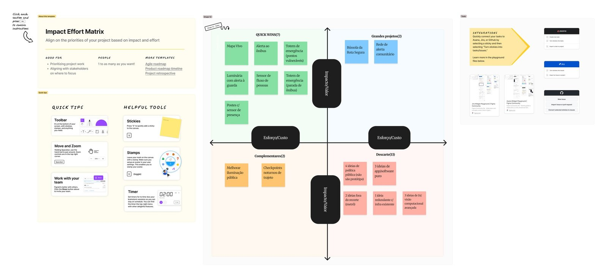
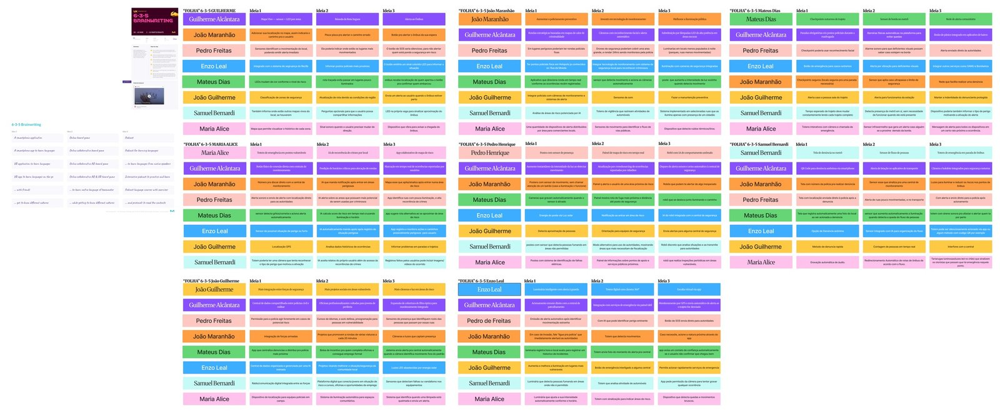
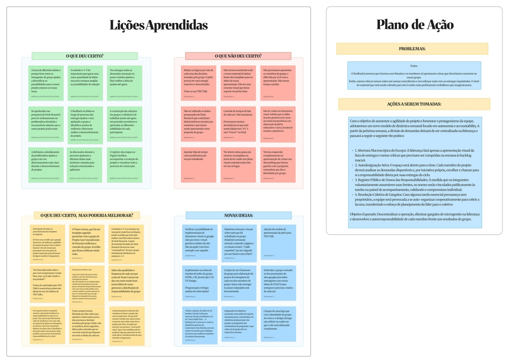
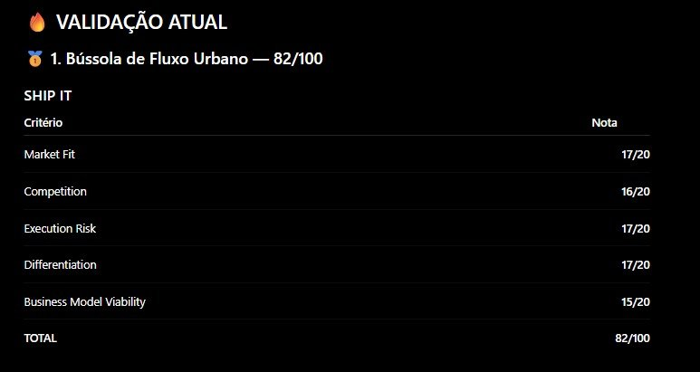
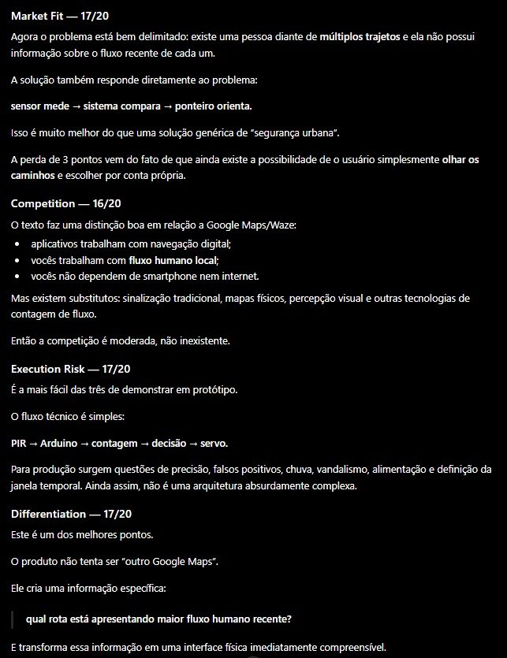
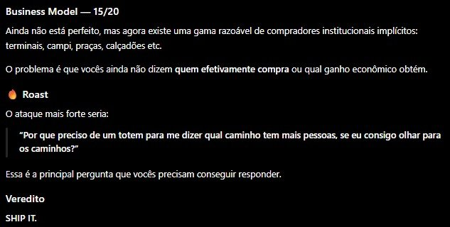

A primeira semana marcou o início oficial do Projeto 1. O foco esteve na apresentação da disciplina, formação do Grupo 12 e criação da estrutura que passaria a registrar toda a jornada do projeto.
A semana começou com a apresentação do tema do semestre, formação do Grupo 12 e alinhamento das entregas obrigatórias para a segunda semana letiva.
Neste momento ainda não houve pesquisa ou definição de problema. O objetivo era estruturar o espaço oficial de registro do projeto.
O Google Sites foi criado utilizando a conta Google da CESAR School, com acesso liberado para todos os integrantes.
A partir dessa etapa, o site passou a funcionar como a fonte oficial de documentação e repositório dos entregáveis do grupo.
Cada integrante cadastrou seus dados na aba Grupo, incluindo nome completo, e-mail, turma e foto, conforme definido para a entrega.
Antes de pesquisar ou construir uma solução, o grupo criou a infraestrutura necessária para documentar o projeto durante todo o semestre. O Google Sites passou a ser a referência principal para avaliação e acompanhamento da evolução do Grupo 12.
Nesta etapa, o Grupo 12 passou a investigar o tema de segurança urbana e prevenção da violência, buscando referências, dados e diferentes perspectivas para compreender melhor o problema.
O grupo realizou uma enquete interna para definir um foco inicial de
trabalho. O resultado apontou Segurança Urbana e Prevenção da
Violência como tema prioritário, com 4 votos, associado à
mobilidade e à vulnerabilidade de pessoas que dependem do transporte
público no período noturno, entre 18h e 05h.
O problema ainda não possuía um recorte específico. O objetivo desta
semana foi levantar referências e construir uma primeira linha de
investigação por meio da pesquisa secundária e da Máquina do Tempo.
Pesquisa secundária para compreender o contexto do problema a partir de fontes já existentes.
O levantamento reuniu notícias, dados oficiais, produções acadêmicas, vídeos e podcasts relacionados à segurança urbana, violência, transporte público e vulnerabilidade durante o período noturno.

Uma linha temporal para compreender como o problema se manifesta no passado, presente e em possíveis futuros.
A Máquina do Tempo permitiu observar o problema em diferentes momentos, buscando entender mudanças no contexto da segurança em espaços públicos e levantar hipóteses para futuros possíveis.

Insegurança noturna nas paradas de ônibus, subnotificação de assaltos e ausência de microdados oficiais por horário e localização no CTM/SDS-PE.
Histórico de segurança concentrado no interior dos veículos; abrigos antigos de concreto fechado que criavam zonas cegas; e iluminação de vapor de sódio, com sombras extensas.
Tempo de espera elevado após as 22h, chegando a cerca de 90 minutos; migração de parte dos usuários para transporte por aplicativo; e dependência do celular como recurso de segurança em locais escuros.
Como exercício exploratório, foram imaginados abrigos com iluminação indireta e sensoriamento de baixo custo capaz de medir o tempo de permanência no local. A possibilidade de utilizar dados agregados para apoiar decisões de ronda ou frota foi registrada como direção futura.
A partir dos templates, o grupo passou a considerar conceitos de CPTED — Crime Prevention Through Environmental Design e design passivo, buscando compreender como o próprio ambiente poderia comunicar presença sem expor o cidadão. A resistência a vandalismo também passou a ser considerada como critério importante de design.
Nesta etapa, aprofundamos a compreensão do problema relacionado à vulnerabilidade noturna em paradas de ônibus do Recife, analisando os desafios, as situações enfrentadas atualmente, o público impactado e as oportunidades para uma possível solução.

Nesta semana, o Grupo 12 passou da fase de descoberta para uma etapa mais intensa de colaboração e ideação. Foram utilizados o Team Canvas, o Método 6-3-5, a Matriz de Priorização e o Kickoff.
Depois das etapas de Desk Research, Máquina do Tempo e Problema Cabeludo, o grupo começou a transformar as descobertas em possibilidades concretas. A equipe organizou sua forma de trabalho, gerou ideias, avaliou alternativas e apresentou o processo à orientação durante o Kickoff.
Organização da equipe, propósito, metas, valores e formas de trabalho.
O Team Canvas foi utilizado para tornar explícito como o Grupo 12 pretende trabalhar em conjunto. O material registra as pessoas e funções, metas coletivas e pessoais, valores, necessidades e expectativas, forças, habilidades, fraquezas, regras e pontos de ação.

O grupo definiu objetivos coletivos e individuais para orientar o desenvolvimento do projeto.
Foram estabelecidos princípios relacionados à comunicação, colaboração, organização, cumprimento de prazos e divisão de tarefas.
O quadro permitiu identificar necessidades e expectativas dos integrantes, facilitando uma organização mais adequada da equipe.
A equipe também identificou habilidades existentes e pontos que poderiam ser desenvolvidos durante o projeto.
Impacto × Esforço para analisar as alternativas geradas.
A Matriz de Priorização foi utilizada para comparar as ideias produzidas durante a etapa de ideação. O grupo analisou as alternativas considerando a relação entre impacto e esforço, permitindo visualizar quais propostas mereciam maior atenção e quais apresentavam maior dificuldade de execução.

Foram agrupadas ideias com combinação favorável entre impacto e esforço, incluindo Mapa Vivo, Alerta ao Ônibus, Totens de emergência, sensores e soluções relacionadas à iluminação.
Entre as alternativas de maior esforço e impacto estavam a Bússola da Rota Segura e a Rede de Alerta Comunitário.
Ideias como melhoria da iluminação pública e checkpoints noturnos foram classificadas como alternativas complementares.
Também foram identificadas propostas que não se encaixavam tão bem nos critérios do projeto, incluindo aplicativos puros, políticas públicas, ideias relacionadas ao metrô e tecnologias consideradas complexas para o escopo do semestre.
Brainwriting colaborativo para geração e refinamento de ideias.
O grupo utilizou uma adaptação do Método 6-3-5 para trabalhar de forma remota. Cada integrante registrou suas ideias individualmente e, posteriormente, as contribuições foram compartilhadas para que outros integrantes pudessem desenvolvê-las e refiná-las.

Cada integrante apresentou ideias relacionadas ao problema trabalhado.
As ideias foram disponibilizadas para que os outros integrantes pudessem analisá-las.
Os participantes puderam complementar, modificar e desenvolver as ideias dos colegas.
As contribuições serviram de base para a comparação e posterior priorização das alternativas.
Primeira apresentação formal do projeto para a orientação.
O Kickoff marcou o primeiro contato formal da orientação com o processo desenvolvido pelo Grupo 12. A apresentação reuniu a trajetória construída até aquele momento, passando pela Desk Research, Máquina do Tempo, Problema Cabeludo, Método 6-3-5 e Matriz de Priorização.
O principal feedback recebido durante o Kickoff foi relacionado à forma de apresentação. A orientação sugeriu uma abordagem mais próxima do formato TED Talk, utilizando storytelling, dinamismo visual, ritmo e ganchos narrativos, evitando transformar a apresentação em uma simples explicação do processo acadêmico.
A Semana 4 marcou a passagem da fase de descoberta para a fase de ideação. O grupo fortaleceu sua organização interna, gerou diversas possibilidades de solução, utilizou critérios de impacto e esforço para priorizar as alternativas e apresentou sua trajetória à orientação. Essas atividades prepararam o projeto para as etapas seguintes de seleção, validação e refinamento da solução.
Nesta semana, registramos as lições aprendidas durante o desenvolvimento do projeto, identificando o que funcionou, o que não funcionou, o que poderia ser melhorado e novas ideias para os próximos passos.

O material reúne as reflexões do grupo sobre o processo realizado e também apresenta um plano de ação com problemas identificados e ações a serem tomadas.
Esta semana marcou o "choque de realidade" do processo: submeter a ideia vencedora da Matriz de Priorização a uma validação crítica e hostil, para descobrir falhas de mercado, execução e viabilidade antes de qualquer linha de código ou protótipo de alta fidelidade.
Inicialmente, o grupo reformulou também ideias que haviam sido descartadas na Matriz de Priorização, com a intenção de gerar múltiplos testes na ferramenta (um por integrante). Após orientação de que o exercício deveria ser feito com uma única ideia representando o grupo, o processo foi corrigido: as prosas refinadas das ideias que haviam sido classificadas como Quick Wins e Grandes Projetos foram levadas à votação interna, e o grupo convergiu para a Bússola de Fluxo Urbano (evolução da ideia "Bússola da Rota Segura" da matriz) como a ideia oficial a ser validada.
O site Don't Build This (dontbuildthis.com/roast) apresentou erro de submissão por falta de créditos na API da OpenAI utilizada pela ferramenta. Como o próprio Don't Build This se apoia no modelo da OpenAI para gerar sua análise, a orientação foi replicar a lógica de validação diretamente em um prompt estruturado no ChatGPT, reproduzindo os critérios, o tom de "roast" e o formato de pontuação (0–100) do site original. O grupo documentou três elementos desse processo: o prompt utilizado, o print do resultado gerado pela IA e a prosa final da ideia submetida.
"Bússola de Fluxo Urbano" foi descrita como um totem com ponteiro em servo motor, posicionado em pontos com 2 a 3 caminhos possíveis a partir de uma mesma origem, cada rota com seu próprio sensor de presença. A proposta mede fluxo de pedestres localmente e em tempo real — sem depender de internet, dados de terceiros ou captura de imagens — e aponta fisicamente para a rota com maior circulação recente, permanecendo em posição neutra quando nenhuma rota apresenta fluxo detectado. Protótipo previsto em Arduino UNO, com sensores de presença e controle do ponteiro via PWM.
A análise gerada classificou a ideia como SHIP IT, com nota final de 82/100:
Com a nota superando o mínimo de 80/100 exigido para esta etapa, o grupo segue para o refinamento da ideia e o início da estruturação do protótipo em Arduino, tendo como principal ponto de atenção para as próximas semanas justamente a resposta clara ao questionamento de monetização/valor levantado na dimensão de Business Model.
Quero que você funcione como uma ferramenta de validação de ideias de startups, reproduzindo o mais fielmente possível a lógica de análise utilizada pelo site “Don't Build This” (dontbuildthis.com/roast). O objetivo NÃO é simplesmente dizer se uma ideia é boa ou ruim. Quero que você faça uma análise crítica e tente encontrar os motivos pelos quais a ideia pode falhar antes de ser construída. A ferramenta Don't Build This apresenta a validação como um “roast”: a ideia é analisada de forma brutalmente honesta, procurando fraquezas, riscos e problemas que poderiam fazer alguém perder tempo e dinheiro construindo algo que não deveria ser construído. Para cada ideia que eu enviar, faça uma avaliação independente e completa. A análise deve considerar obrigatoriamente estas dimensões: 1. MARKET FIT Avalie: - qual problema a ideia resolve; - se esse problema é real e relevante; - quem possui esse problema; - quão grande e acessível é o público-alvo; - se existe demanda suficiente; - se o problema é frequente/importante o bastante para gerar adoção; - se os usuários realmente teriam motivo para utilizar a solução; - se existe disposição para pagar, quando aplicável. 2. COMPETITION / COMPETITIVE LANDSCAPE Avalie: - quais concorrentes diretos já existem; - quais concorrentes indiretos e soluções substitutas já existem; - como os usuários resolvem esse problema atualmente; - se o mercado já está saturado; - se existem players fortes com vantagem significativa; - o que impediria um concorrente de copiar a ideia; - se existe espaço real para uma nova empresa entrar nesse mercado. 3. EXECUTION RISK Avalie: - dificuldade técnica de construir a solução; - complexidade operacional; - custos iniciais; - dependências de terceiros; - necessidade de dados, APIs, infraestrutura, parceiros ou efeitos de rede; - riscos de adoção; - riscos legais e regulatórios, quando aplicáveis; - riscos relacionados a privacidade, segurança, confiança ou responsabilidade; - possibilidade de a execução ser muito mais difícil do que a ideia inicialmente parece. 4. DIFFERENTIATION Avalie: - qual é o verdadeiro diferencial da ideia; - se esse diferencial é relevante para o usuário; - se é realmente uma vantagem competitiva ou apenas uma característica; - se é fácil para concorrentes copiarem; - se existe uma razão clara para um usuário escolher essa solução em vez das alternativas existentes; - se a proposta possui algum “moat” ou vantagem defensável. 5. BUSINESS MODEL VIABILITY Avalie: - como a empresa ganharia dinheiro; - quem pagaria; - por que pagaria; - se o modelo de monetização é plausível; - se o ticket/preço faz sentido; - custos de aquisição e atendimento; - possibilidade de alcançar escala; - se existe alguma característica do modelo que pode tornar a operação economicamente inviável. IMPORTANTE SOBRE A AVALIAÇÃO: Não seja gentil só para agradar. Não presuma que a ideia é boa porque ela parece inovadora. Não dê nota alta apenas porque existe um mercado potencial. Procure ativamente: - problemas ocultos; - riscos; - contradições; - dependências; - concorrentes; - dificuldades de execução; - problemas de monetização; - motivos pelos quais usuários não adotariam a solução; - motivos pelos quais a empresa poderia fracassar. Se a ideia for ruim, diga claramente que ela é ruim. Se a ideia tiver potencial, mas precisar de mudanças, explique exatamente o que precisa ser mudado. Se a ideia for forte, explique por que ela é forte e quais riscos ainda permanecem. A avaliação deve ser baseada na ideia COMO ELA FOI APRESENTADA. Não altere ou “melhore” a ideia antes da primeira avaliação. ATRIBUIÇÃO DA NOTA: Dê uma nota final de 0 a 100. A nota deve refletir o conjunto da análise dos cinco critérios acima. Depois da nota, classifique a ideia em um dos níveis: 80–100 = SHIP IT A ideia apresenta potencial suficiente para justificar ser desenvolvida/testada. 60–79 = PROMISING / NEEDS WORK A ideia possui potencial, mas existem problemas relevantes que precisam ser corrigidos antes de avançar. 0–59 = ROASTED A ideia possui problemas graves de mercado, competição, execução, diferenciação ou viabilidade que tornam seu desenvolvimento pouco justificável no estado atual. FORMATO DA ANÁLISE: IDEIA X [NOME OU RESUMO DA IDEIA] NOTA FINAL: XX/100 TIER: [ROASTED / PROMISING / SHIP IT] Depois apresente: MERCADO / MARKET FIT - análise - pontos positivos - principais riscos COMPETIÇÃO - concorrentes - alternativas existentes - nível de competição - análise da posição da ideia RISCO DE EXECUÇÃO - principais dificuldades - riscos técnicos - riscos operacionais - riscos legais/regulatórios, se houver DIFERENCIAÇÃO - principal diferencial - força desse diferencial - facilidade de cópia - vantagem competitiva real MODELO DE NEGÓCIO - como poderia ganhar dinheiro - quem pagaria - principais riscos econômicos MAIOR FORÇA DA IDEIA Explique qual é o aspecto mais promissor. MAIOR RISCO Explique qual é o principal motivo pelo qual essa ideia poderia fracassar. POR QUE ISSO PODE NÃO FUNCIONAR? Faça um “roast” objetivo e brutalmente honesto, apontando os problemas que provavelmente seriam ignorados por alguém apaixonado pela própria ideia. VEREDITO Diga claramente se você: - construiria a ideia; - refinaria/pivotaria antes de construir; - ou abandonaria a ideia. PRÓXIMOS PASSOS / POSSÍVEL PIVOT Caso a ideia não esteja pronta para ser desenvolvida, sugira mudanças concretas capazes de aumentar sua viabilidade. IMPORTANTE: Não tente manipular a avaliação para que a ideia obtenha 80/100. Se a análise indicar 46/100, dê 46/100. Se indicar 64/100, dê 64/100. Se indicar 91/100, dê 91/100. A finalidade é reproduzir uma validação crítica semelhante à proposta do Don't Build This, e não simplesmente validar as ideias. Além disso, quero que você faça a avaliação das ideias de forma independente, sem usar a qualidade de uma ideia para aumentar ou diminuir artificialmente a nota de outra. Vou enviar agora 3 ideias em sequência. Avalie cada uma individualmente usando exatamente essa metodologia e, ao final, faça um ranking das 3 ideias da maior para a menor nota. Aguarde minha próxima mensagem com as três ideias.


